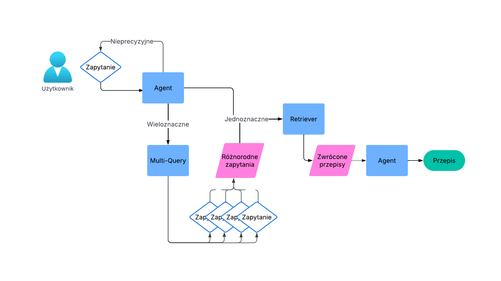
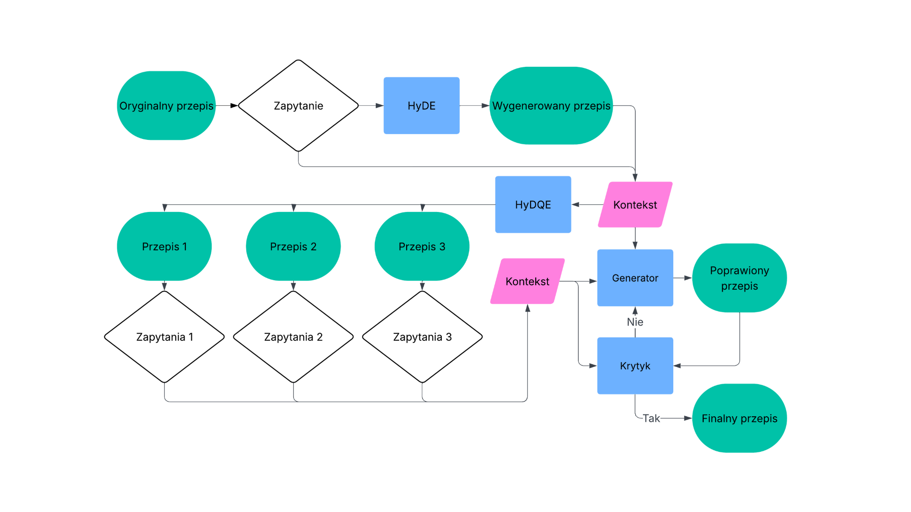

Nasza aplikacja
Prosty interfejs, wygodna nawigacja i dopasowanie do potrzeb użytkownika.

Zapomnij o braku pomysłów, niekompletnych zakupach i brudnych rękach podczas gotowania. Ragatouille to inteligentny asystent kulinarny, który pomoże Ci zaplanować posiłki, sprawdzi zawartość spiżarni, dobrać przepisy i przeprowadzi przez gotowanie krok po kroku.
Jednym z kluczowych elementów działania aplikacji są dane. W projekcie wykorzystano 3,5 tys. unikalnych przepisów z popularnych polskich stron kulinarnych. Zostały one starannie przetworzone i ujednolicone, tworząc spójną bazę wiedzy.
System dobiera przepisy w oparciu o Twoje zapasy, preferencje i dostępność składników.
Pomaga w trakcie gotowania – mówi co robić, umożliwia modyfikację przepisu i działa głosowo.
Prosty interfejs, wygodna nawigacja i dopasowanie do potrzeb użytkownika.
System testowano na zbiorze przepisów i zestawie COVID-QA. Porównano jakość wyszukiwania i trafność odpowiedzi.